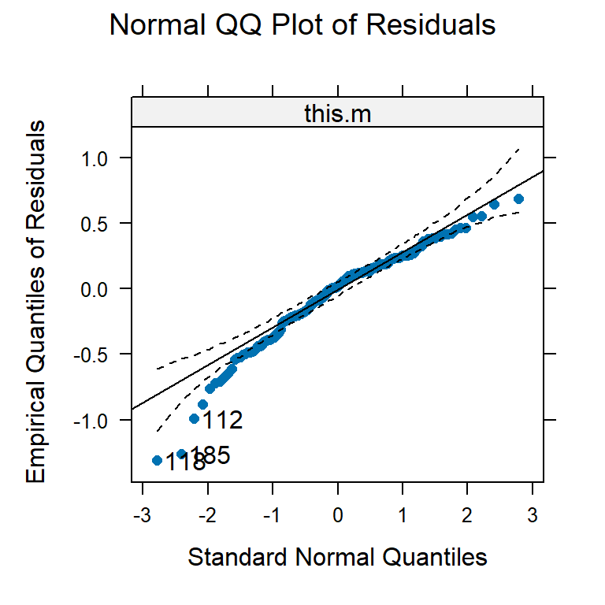
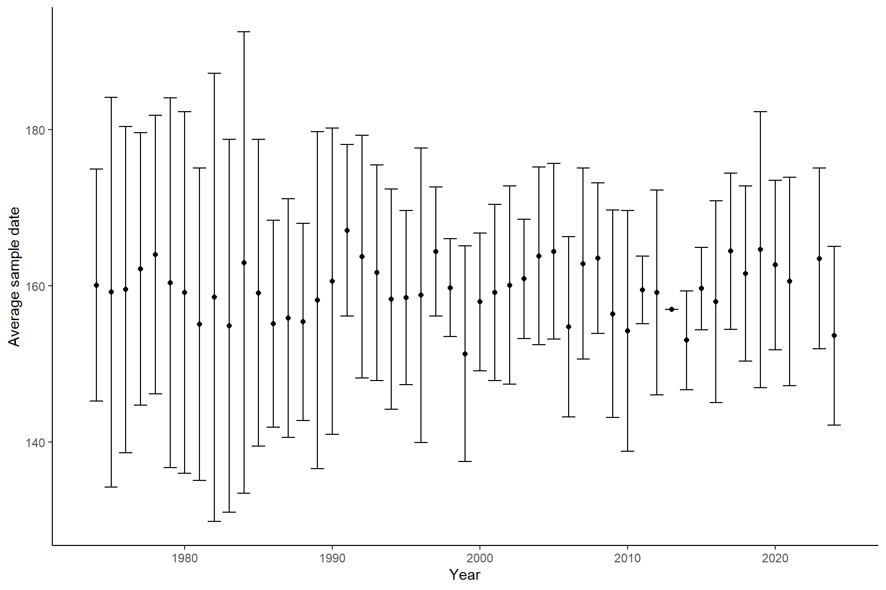
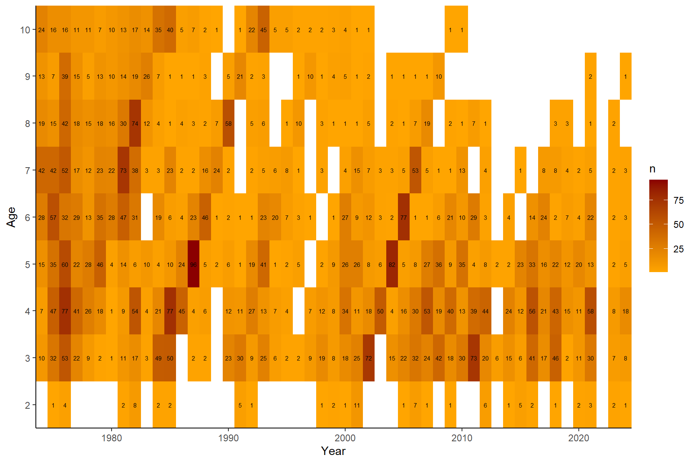
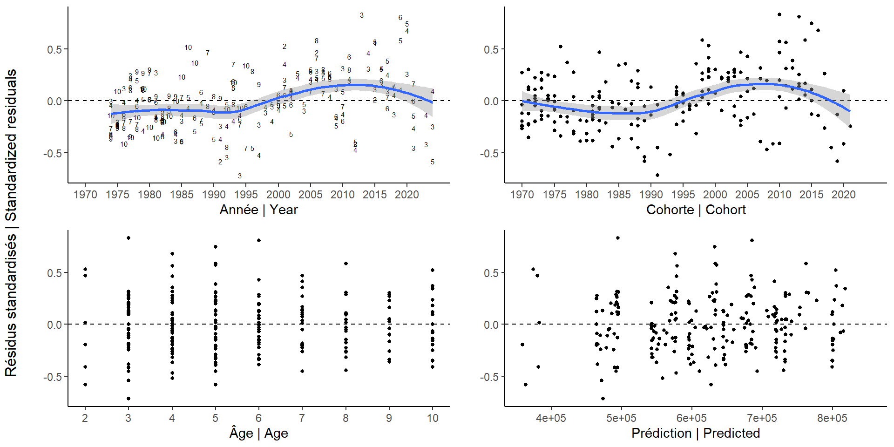

Fecundity-at-age
2024-12-17
1 SET-UP
source('../../0.0_settings.R')
this.year <- 20242 Input data
2.1 Read
# Pelletier data
pel <- read.csv('../../data/pelletier.csv')
# bio data
new <- T #1st time set to TRUE
if(new){
bio <- get.bio(species='maquereau',user=imlp.user,password=imlp.pass)
save(bio,file=paste0('../../Rdata/bio_',Sys.Date(),'.Rdata'))
}else{
df <- file.info(list.files("../../Rdata/", full.names = T,pattern="bio_"))
load(rownames(df)[which.max(df$mtime)])
}2.2 Transformations
## Pelletier data
# add variables
pel$gsi <- with(pel,weight_gonads/weight*100)
pel$ageplus <- pmin(pel$age,10)
# melt dataframe
pelm <- pel[,c('id','fecundity','length','weight','age','weight_gonads','doy','gsi')]
pelm <- melt(pelm,id=c('id','fecundity'))
## bio data
# subset
bio$doy <- lubridate::yday(as.Date(paste(bio$year,bio$month,bio$day,sep='/')))
bio.faa <- bio[bio$matur==5 &
bio$sex=='F' &
bio$agef>0,
c('year','month','matur','sex','wgonad','agef','weight','length.frozen','doy')]
bio.faa <- bio.faa[!is.na(bio.faa$agef) & !is.na(bio.faa$wgonad) & !is.na(bio.faa$weight),]
names(bio.faa)[c(6,8)] <- c('age','length') # length kept to help identify potentially wrong ages
# transform/add
bio.faa$wgonad <- bio.faa$wgonad*1000 # same unit as pelletier (g)
bio.faa$weight <- bio.faa$weight*1000
bio.faa$gsi <- with(bio.faa,wgonad/weight*100)
bio.faa$ageplus <- pmin(bio.faa$age,10)3 Pelletier data
3.1 Plots
3.1.1 relationships
ggplot(pelm,aes(y=fecundity,x=value))+
geom_point()+
facet_wrap(~variable,scale='free_x')
## Warning: Removed 31 rows containing missing values or values outside the scale range (`geom_point()`).3.1.2 relationships (log)
ggplot(pelm,aes(y=fecundity,x=log(value)))+
geom_point()+
facet_wrap(~variable,scale='free_x')
## Warning: Removed 31 rows containing missing values or values outside the scale range (`geom_point()`).3.1.3 pairs
d <- pel[,c('length','weight','age','weight_gonads','doy','gsi','fecundity')]
suppressWarnings(chart.Correlation(d, histogram = TRUE, method = "pearson"))3.1.4 pairs (log)
suppressWarnings(chart.Correlation(log(d), histogram = TRUE, method = "pearson"))3.2 Linear models
Replicate Pelletier analyses. Pelletier found gonad weight to be the one with the highest predictive power.
# original analyses by Pelletier 1986
models <- ddply(pelm,c('variable'),function(x){
m <- lm(log10(fecundity)~log10(value),data=x)
c(variable=unique(as.character(x$variable)),
intercept=round(unname(coef(m)[1]),2),
slope=round(unname(coef(m)[2]),2),
R2=round(summary(m)$r.squared,2),
R2.adj=round(summary(m)$r.squared,2),
sigma=round(summary(m)$sigma,2),
n=nrow(x[!is.na(x$value),]))
})
kable(models[order(models$R2,decreasing = T),])| variable | intercept | slope | R2 | R2.adj | sigma | n | |
|---|---|---|---|---|---|---|---|
| 4 | weight_gonads | 4.34 | 0.75 | 0.61 | 0.61 | 0.13 | 221 |
| 6 | gsi | 4.77 | 0.93 | 0.44 | 0.44 | 0.16 | 221 |
| 2 | weight | 2.75 | 1.06 | 0.36 | 0.36 | 0.17 | 222 |
| 5 | doy | 13.45 | -3.48 | 0.36 | 0.36 | 0.17 | 222 |
| 1 | length | -1.84 | 2.93 | 0.26 | 0.26 | 0.18 | 222 |
| 3 | age | 5.38 | 0.46 | 0.23 | 0.23 | 0.19 | 193 |
3.3 Outlier removal
# age
pelo <- pel[pel$age!=15 & !is.na(pel$age),]
# gonad weight
quantile(bio[bio$matur==5 & !is.na(bio$matur) & !is.na(bio$wgonad),'wgonad']*1000,c(0.005,0.995))
## 0.5% 99.5%
## 13.8002 181.9179
pelo <- pelo[pelo$weight_gonads<200,] # weights above 200g are unrealistic
nrow(pelo)
## [1] 1883.4 New model
3.4.1 Fit
Gonad weight and age are correlated, and therefore fecundity is predicted in function of age + GSI. Mathieu Boudreau tested a range of models. See script in depricated folder. Here I only retained the selected one to use for model input. Selected robust regression because less weight to lower fecundity values (individuals for which spawning might have started already).
this.m <- robust::lmRob(log(fecundity) ~ log(gsi) + log(ageplus), data = pelo)
car::vif(this.m) # very low
## log(gsi) log(ageplus)
## 1.022523 1.0225233.4.2 Model info
3.4.2.1 Summary
summary(this.m)
##
## Call:
## robust::lmRob(formula = log(fecundity) ~ log(gsi) + log(ageplus),
## data = pelo)
##
## Residuals:
## Min 1Q Median 3Q Max
## -1.31019 -0.20982 0.02055 0.18519 0.68402
##
## Coefficients:
## Estimate Std. Error t value Pr(>|t|)
## (Intercept) 10.80225 0.21618 49.969 < 2e-16 ***
## log(gsi) 0.71380 0.08521 8.377 1.36e-14 ***
## log(ageplus) 0.41388 0.05663 7.308 8.00e-12 ***
## ---
## Signif. codes: 0 '***' 0.001 '**' 0.01 '*' 0.05 '.' 0.1 ' ' 1
##
## Residual standard error: 0.2842 on 184 degrees of freedom
## Multiple R-Squared: 0.4176
##
## Test for Bias:
## statistic p-value
## M-estimate 7.026 0.071064
## LS-estimate 15.124 0.001713
## 1 observation effacée parce que manquante3.4.2.2 Validation 1
plot(this.m, which.plots = c(1,2,5,6) )
3.4.2.3 Validation 2
p <-ggeffects::ggeffect(this.m)
grid.arrange(plot(p[[1]]),plot(p[[2]]),nrow=1)
va2a <- ggeffects::predict_response(this.m, terms = "gsi")
## Model has log-transformed response. Back-transforming predictions to original response scale. Standard errors are still on the transformed scale.
v1<- ggplot(va2a, aes(x, predicted/1000)) +
geom_line() +
geom_ribbon(aes(ymin = conf.low/1000, ymax = conf.high/1000), alpha = 0.1)+
geom_point(data=pelo, aes(x=gsi, y=fecundity/1000))+
scale_y_continuous(trans="log10") + scale_x_continuous(trans="log10")+
labs(x="Indice gonado-somatique\nGonadosomatique index (%)", y="Fécondité | Fecundity ('000)")
va2b <- ggeffects::predict_response(this.m, terms = "ageplus")
## Model has log-transformed response. Back-transforming predictions to original response scale. Standard errors are still on the transformed scale.
v2<- ggplot(va2b, aes(x, predicted/1000)) +
geom_line() +
geom_ribbon(aes(ymin = conf.low/1000, ymax = conf.high/1000), alpha = 0.1)+
geom_point(data=pelo, aes(x=ageplus, y=fecundity/1000))+
scale_y_continuous(trans="log10") + scale_x_continuous(trans="log10")+
labs(x="Âge | Age", y="Fécondité | Fecundity ('000)")
ggarrange(v1,v2,nrow=1, align="hv")
## Warning in scale_y_continuous(trans = "log10"): log-10 transformation introduced infinite values.
## Warning in scale_x_continuous(trans = "log10"): log-10 transformation introduced infinite values.
## Warning in scale_y_continuous(trans = "log10"): log-10 transformation introduced infinite values.
## log-10 transformation introduced infinite values.
## Warning in scale_x_continuous(trans = "log10"): log-10 transformation introduced infinite values.
## Warning: Removed 1 row containing missing values or values outside the scale range (`geom_point()`).
## Removed 1 row containing missing values or values outside the scale range (`geom_point()`).4 Bio data
4.1 Outlier removal
nrow(bio.faa)
## [1] 5470
# month (no "pre-spawners" after July)
bio.faa <- bio.faa[bio.faa$month <8,]
# remove fish with ages that cannot be trusted, based on their length (see 3.0_caa))
bio.faa <- bio.faa[bio.faa$age<18,]
bio.faa <- ddply(bio.faa,c('age'),transform,outlierAL=outlier(length,coef=3))
bio.faa[is.na(bio.faa$outlierAL),'outlierAL'] <- FALSE
# incorrect weights
bio.faa <- bio.faa[bio.faa$weight>0,]
lw <- lm(log(bio.faa$weight)~log(bio.faa$length))
bio.faa[!is.na(bio.faa$length),'outlierLW'] <- abs(residuals(lw))>sd(residuals(lw))*3
bio.faa[is.na(bio.faa$outlierLW),'outlierLW'] <- FALSE
# gsi
bio.faa <- bio.faa[bio.faa$gsi<33,] # one with gsi =35% (more than one third of this fish is gonad...)
bio.faa <- bio.faa[bio.faa$gsi>3.4,] # smaller than ever observed for age 2. presumably wrong maturity stage4.2 Plots for outliers
4.2.1 outliers AL
ggplot(bio.faa,aes(x=age,y=length,col=outlierAL))+geom_point()
## Warning: Removed 7 rows containing missing values or values outside the scale range (`geom_point()`).
bio.faa <- bio.faa[!bio.faa$outlierAL,]
bio.faa$outlierAL <- NULL4.2.2 outliers LW
ggplot(bio.faa,aes(x=log(length),y=log(weight),col=outlierLW))+geom_point()
## Warning: Removed 7 rows containing missing values or values outside the scale range (`geom_point()`).
bio.faa <- bio.faa[!bio.faa$outlierLW,]
bio.faa$outlierLW <- NULL4.2.3 outliers GSI
ggplot(bio.faa,aes(x=as.factor(ageplus),y=gsi))+geom_boxplot()
4.3 Comparison Pelletier
names(bio.faa)[which(names(bio.faa)=='wgonad')] <- 'weight_gonads'
bio.faa$data <- 'bio'
pel$data <- 'pelletier'
cols <- c('weight','age','weight_gonads','gsi','data')
comb <- rbind(bio.faa[,cols],pel[,cols])
comb$id <- 1:nrow(comb)
combm <- melt(comb,id=c('id','data'))
ggplot(combm,aes(x=data,y=value,col=data))+geom_boxplot()+facet_wrap(~variable,scale='free_y')
## Warning: Removed 31 rows containing non-finite outside the scale range (`stat_boxplot()`).4.4 Which months to include?
There is a clear relationship between fecundity and doy. Cannot add variable in model (correlated with gsi). If there are more samples from early on, might result in overestimate of fecundity.
Kept july samples (no correct for doy either) because they are rare and have negligible impact.
4.4.1 Plots
4.4.1.1 gsi vs month
n <- ddply(bio.faa,c('ageplus','month'),summarise,n=length(year))
ggplot(bio.faa,aes(x=as.factor(month),y=gsi))+
geom_boxplot(aes(fill=as.factor(month)))+
geom_text(data=n,aes(y=Inf,label=n),vjust=1.1)+
facet_wrap(~ageplus)4.4.1.2 sample date over time
dates <- ddply(bio.faa,c('year'),summarise,mu=mean(doy),low=mu-2*sd(doy),high=mu+2*sd(doy))
ggplot(dates,aes(x=year,y=mu))+geom_point()+geom_errorbar(aes(ymin=low,ymax=high))+
labs(y='Average sample date',x='Year')
5 Predictions
5.1 Predict
See script test prediction to help understand the approach taken here. se is only used to help weigh the smoothing (but is relative because various shrinkage factors can be used).
faa <- ddply(bio.faa,c('year','ageplus'),summarise,n=length(gsi),gsi.sd=sd(gsi),gsi=mean(gsi))
faa$fec <- exp(predict(this.m,faa))
faa[!is.na(faa$gsi.sd),'fec.se'] <- exp(predict(this.m,data.frame(ageplus=faa$ageplus,gsi=faa$gsi.sd)))
faa[!is.na(faa$gsi.sd),'low'] <- exp(predict(this.m,data.frame(ageplus=faa$ageplus,gsi=pmax(faa$gsi-2*faa$gsi.sd,0.1))))
faa[!is.na(faa$gsi.sd),'high'] <- exp(predict(this.m,data.frame(ageplus=faa$ageplus,gsi=pmax(faa$gsi+2*faa$gsi.sd,0.1))))
minf <- 5 # number of fish should be higher than this5.2 Plots
5.2.1 FAA raw
ggplot(faa[faa$n>=minf,],aes(x=year,y=fec/1000))+
geom_point()+
geom_line()+
facet_wrap(~ageplus) + xlab("Année | Year") + ylab("Fécondité | Fecundity ('000)")5.2.2 FAA vs pelletier
pelfaa <- ddply(pelo[!is.na(pelo$ageplus),],c('ageplus'),summarise,fec=mean(fecundity),fec.se=sd(fecundity))
ggplot(faa[faa$n>=minf,])+
geom_rect(data=pelfaa,aes(ymin=fec-2*fec.se,ymax=fec+2*fec.se,xmin=-Inf,xmax=Inf),fill='orange',alpha=0.5)+
geom_hline(data=pelfaa,aes(yintercept=fec),col='orange')+
geom_point(aes(x=year,y=fec))+
geom_line(aes(x=year,y=fec))+
facet_wrap(~ageplus)+
labs(y='Fecundity',x='Year')5.2.3 predicted fec-gsi
ggplot(faa,aes(x=gsi,y=fec))+
geom_point(data=pelo,aes(y=fecundity),col='orange')+
geom_point()+
labs(y='Fecundity',x='GSI')
## Warning: Removed 1 row containing missing values or values outside the scale range (`geom_point()`).5.2.4 predicted fec-age
ggplot(faa,aes(x=as.factor(ageplus),y=fec))+
geom_boxplot(data=pelo[!is.na(pelo$ageplus),],aes(y=fecundity,group=ageplus),fill='orange',col='darkgoldenrod')+
geom_point()+
labs(y='Fecundity',x='Age')5.2.5 n
ggplot(faa,aes(x=year,y=as.factor(ageplus)))+
geom_tile(aes(fill=n))+
geom_text(aes(label = n), size = 2)+
scale_fill_gradient(low = "orange", high = "darkred") +
labs(y='Age',x='Year')+
scale_x_continuous(expand = c(0,0))+
scale_y_discrete(expand=c(0,0))
5.2.6 GSI
Check underlying trend
ggplot(bio.faa,aes(x=year,y=gsi))+
geom_boxplot(aes(group=year))+
geom_smooth()+
facet_wrap(~ageplus)+
labs(x='Année | Year',y='Indice gonado-somatique\nGonadosomatique index (%)')
## `geom_smooth()` using method = 'gam' and formula = 'y ~ s(x, bs = "cs")'6 Fill and smooth
6.1 fit model
faam <- faa[faa$n>=minf,]
faam$cv <- with(faam,fec.se/fec)
names(faam)[which(names(faam)=='ageplus')] <- 'age'
all <- expand.grid(year=1968:this.year, age=min(faam$age):max(faam$age))
faam <- merge(all, faam, all.x = TRUE)
faa.fit <- armatrix.fit(year=faam$year,age=faam$age,x=faam$fec,cv=faam$cv,shrink.cv = 0.5) # shrink reduces cv variability, not overall uncertainty
## Warning in armatrix.fit(year = faam$year, age = faam$age, x = faam$fec, : cvs equal to 0/NA replaced by value of historic 95% quantile
faa.fit # convergence ok
save(faa.fit,file=paste0("../../Rdata/fit.armatrix/",this.year,"base_cv1shrink0.5.Rdata"))
#save(faa.fit,file=paste0("Rdata/fit.armatrix/",this.year,"base_cv4shrink0.5.Rdata"))
6.2 plots
6.2.1 waa
armatrix.waa(faa.fit,ylab='Fecundity')+scale_color_viridis_d()6.2.2 Predicted obs
armatrix.predobs(faa.fit,scale='free',ncol=3)
## Warning: Removed 283 rows containing missing values or values outside the scale range (`geom_point()`).6.2.3 Predicted
armatrix.pred(faa.fit,scale='free',ncol=3)
6.2.4 Resid bubble
armatrix.res(faa.fit)
## Warning: Removed 283 rows containing missing values or values outside the scale range (`geom_point()`).6.2.5 Resid dot
#armatrix.res2(faa.fit)
#to make the plot bilingual
d <- faa.fit$output
d$cohort <- with(d, year - age)
p1 <- ggplot(d, aes(x = year, y = res)) + geom_text(aes(label = age),
size = 2) + geom_hline(yintercept = 0, linetype = "dashed") +
labs(y = "", x = "Année | Year") + geom_smooth() +scale_x_continuous(breaks=seq(1970,2020,5), limits=c(1970, this.year))
p2 <- ggplot(d, aes(x = cohort, y = res)) + geom_point(size = 1) +
geom_hline(yintercept = 0, linetype = "dashed") + labs(y = "",
x = "Cohorte | Cohort") + geom_smooth()+scale_x_continuous(breaks=seq(1970,2020,5), limits=c(1970, this.year))
p3 <- ggplot(d, aes(x = age, y = res)) + geom_point(size = 1) +
geom_hline(yintercept = 0, linetype = "dashed") + labs(y = "",
x = "Âge | Age") +scale_x_continuous(breaks=1:10)
p4 <- ggplot(d, aes(x = pred_exp, y = res)) + geom_point(size = 1) +
geom_hline(yintercept = 0, linetype = "dashed") + labs(y = "",
x = "Prédiction | Predicted")
grid.arrange(p1, p2, p3, p4, ncol = 2, left = "Résidus standardisés | Standardized residuals")
## Warning: Removed 283 rows containing non-finite outside the scale range (`stat_smooth()`).
## Warning: Removed 283 rows containing missing values or values outside the scale range (`geom_text()`).
## Warning: Removed 304 rows containing non-finite outside the scale range (`stat_smooth()`).
## Warning: Removed 304 rows containing missing values or values outside the scale range (`geom_point()`).
## Warning: Removed 283 rows containing missing values or values outside the scale range (`geom_point()`).
## Removed 283 rows containing missing values or values outside the scale range (`geom_point()`).
6.2.6 effects
armatrix.effects(faa.fit)
6.2.7 cvs
Only interesting if shrink argument is used.
armatrix.cvs(faa.fit,scale='free',ncol=3)
## Warning: Removed 43 rows containing missing values or values outside the scale range (`geom_line()`).7 Save results
Predict fecundity age 1 fish based on the predicted ratio of fecundity age 2 / age 1 from pelletier
faaf <- faa.fit$output
faaf <- faaf[,c(1:2,9)]
names(faaf)[3] <- 'fecundity'
faafm <- dcast(faaf,year~age,value.var = 'fecundity')
# add age 1
m <- as.numeric(models[models$variable=='age',-1])
fec1fec2 <- (10^(m[1]+log10(1)*m[2]))/(10^(m[1]+log10(2)*m[2]))
fec1fec2
## [1] 0.7269863
faafm <- cbind(year=faafm$year,'1'=faaf[faaf$age==2,'fecundity']*fec1fec2,faafm[,2:ncol(faafm)])
faafm[,2:ncol(faafm)] <- round(faafm[,2:ncol(faafm)],0)
write.csv(faafm, file=paste0('../../csv/',this.year,'/faa_',this.year,'_base_cv1shrink0.5.csv'),row.names = FALSE)
#write.csv(faafm, file=paste0('csv/faa_',this.year,'_sens_cv4shrink0.5.csv'),row.names = FALSE)
p <- ggplot(melt(faafm,id='year'), aes(x = year, y = value/1000, col = variable))+
geom_line()+
labs(x = 'Année | Year', y = 'Fécondité (milliers)\nFecundity (thousands)', col = 'Âge | Age')+
scale_x_continuous(expand = c(0, 0))+
scale_color_viridis_d()
ggsave(filename = paste0('../../img/' ,this.year,'/faa',this.year,'BI.png'),plot = p,units = 'cm',height = 8,width = 16)
p + labs(x = 'Year', y = 'Fecundity (thousands)', col = 'Age')ggsave(filename = paste0('../../img/' ,this.year,'/faa',this.year,'.png'),units = 'cm',height = 8,width = 14)